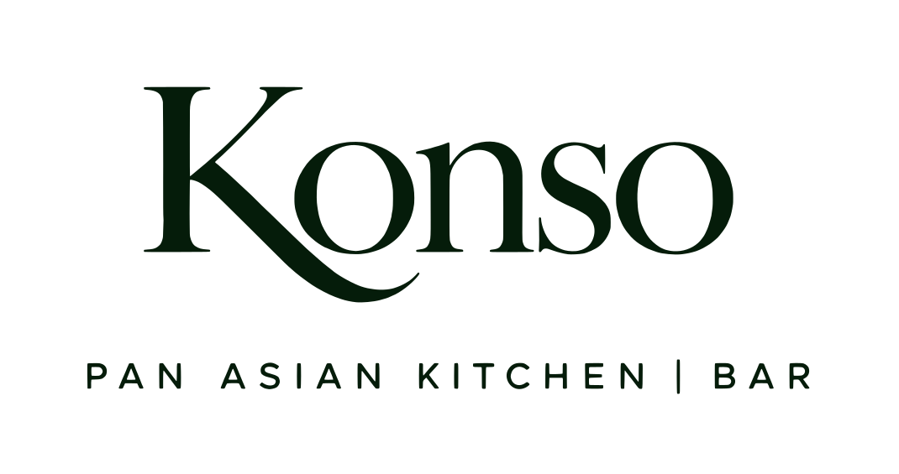
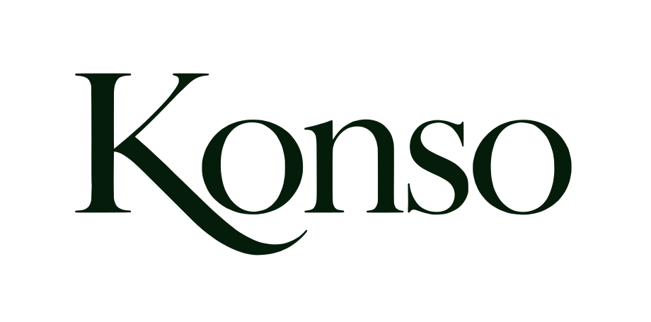

Versions
Gold on green is the signature. Use green on cream on light grounds, and cream on dark when gold is not available.



Foil finish. For the premium look (menus, door sign, cards) use the foil artwork: the real gold foil texture on green paper. For flat printing, signage vinyl, embroidery and web use the flat vector files.